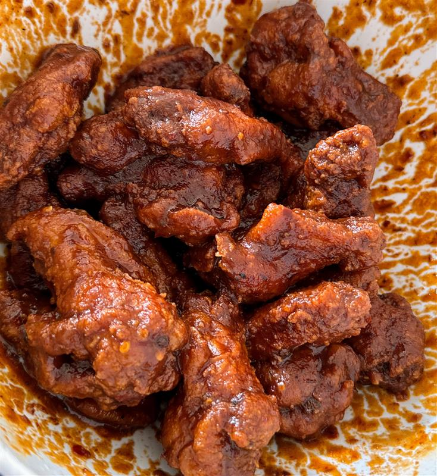

Chipotle Hot Wings

A mouthwatering fusion of smoky chipotle and savory goodness, delivering a satisfying kick for flavor enthusiasts.
Dive into a tantalizing taste experience!
Ingredients
- Frozen Chicken Wings (Drum or Wing)
- Flour
- Chipotle Peppers
- Honey
- Butter
- Assortment of Dry Seasonings (Salt, Pepper, Garlic Powder, etc.)
- Neutral Oil (Canola, Vegetable, or Corn Oil will do)
Instructions
- Take a large sized bowl and place your chicken wings inside.Liberally season the chicken with salt and pepper.
- On a seperate bowl, add about 4 cups of flour. Then season the flour with garlic power, paprika,salt, and
pepper.
- Take your chicken wings and coat them in thr flour. After coating them, lay them on a tray to sit before
frying
- Place your chipotle peppers on a dry medium saucepan on a stove on high heat. Toast the peppers until fragrant
- Place the toasted chipotle pepper in a blender that's halfway filled with water. Blend everything until
smooth, then place the sauce back into the saucepan and set heat to low.
- Mix in butter and honey into the sauce until everything is well encorporated
- On a large sized pot, fill it halfway with a neutural oil of your choice, then set the heat to high
- Once the oil has heat up, place your chicken inside the pot to fry. Ensure that there is enough space between
each chicken so they don't stick. Fry each chicken for about 8 minutes, then take them out and place on a drying
rack to cool for about 4 minutes
- Take a large bowl and fill it with your cooked chicken. Now go back to your sauce and ensure that the
temperature of it is hot to stick to the wings.
- Pour the chipotle hot sauce into the fried chicken bowl, then start tossing and mixing the bowl to make sure
all chicken has been coated evenly. After that, you're done! Enjoy!